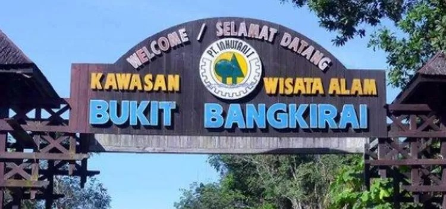

Bukit Bangkirai: Hutan Hujan Tropis dengan Jembatan Kanopi Terpanjang di Kalimantan
Wisata Alam
Samboja
Destinasi Terkini

Taufiq Erik Herliansyah
Jurnalis Wisata | 13 Febuari 2025

Hutan Wisata yang terkenal dengan Jembatan Kanopi terbesar dan pertama di Kalimantan:
Kawasan yang Hutan dulunya mengalami dua kali kebakaran besar akibat musim kemarau panjang, yaitu pada tahun 1982-1983 dan 1997-1998.
Area Flora & Fauna
Area khusus Flora dan Fauna di Bukit Bangkirai
Fasilitas
10 Penyediaan Fasilitas di Bukit Bangkirai
Dokumentasi
5+ Foto dan Video di area Bukit Bangkirai
Informasi
- 📆 Waktu: 08.00 - 16.00/Setiap Hari
- 💰 Tiket: Rp22.000 (weekdays)
Inovasi Terbaru
Fasilitas Unggulan:
- 🏡Penyediaan Cottage
- 🏠Rumah Khas Dayak
- 🍽️Restoran
- 🏊🏿Kolam Renang
"Bukit Bengkirai, keindahan hutan tropis Kalimantan dengan jembatan kanopi yang menakjubkan."